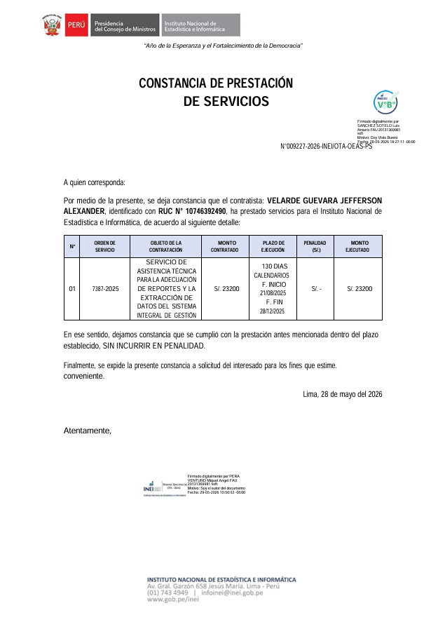
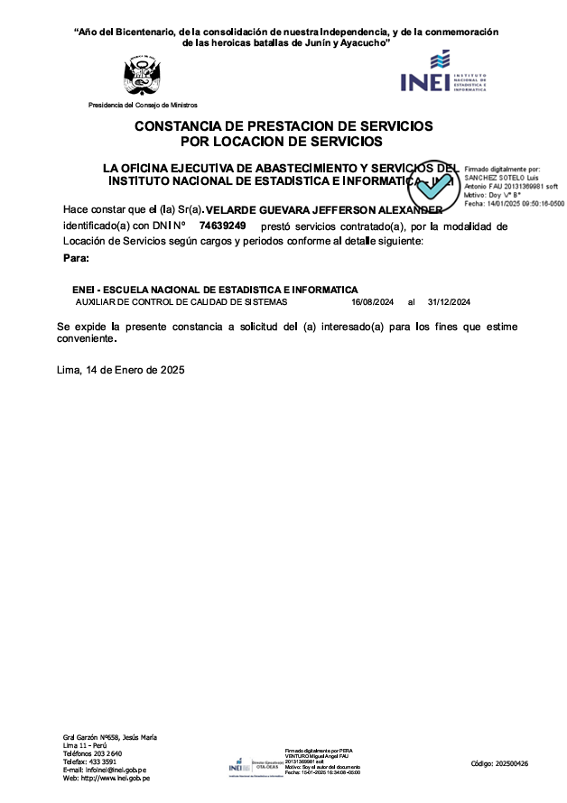
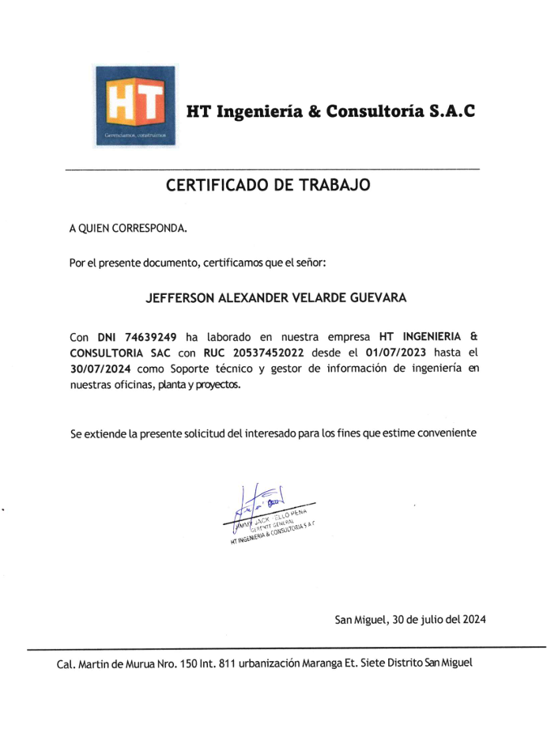
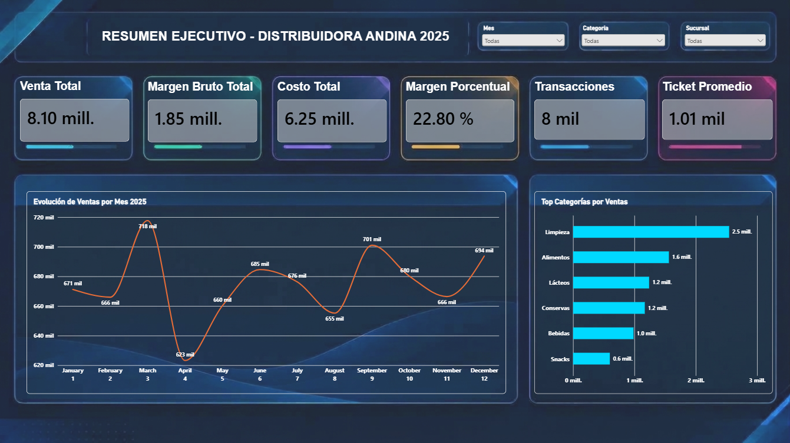
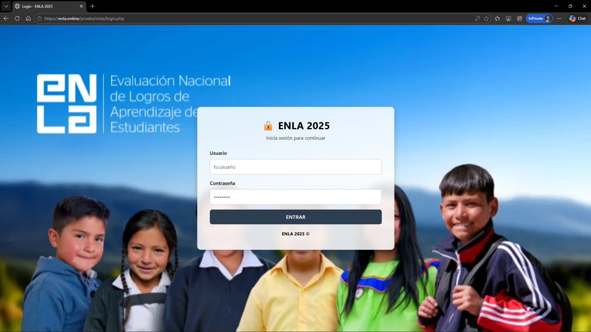

Jefferson Velarde Guevara
ANALISTA DE DATOS | SQL | POWER BI | EXCEL | PYTHON | QA FUNCIONAL
Analista de Datos e Ingeniero de Sistemas con grado de Bachiller y experiencia en procesamiento, validación y control de calidad de datos en proyectos del sector público (INEI). Manejo de SQL, Power BI, Excel y Python para análisis de información, automatización de procesos y generación de dashboards. Experiencia en pruebas funcionales, validación de requerimientos y detección de inconsistencias en sistemas. Con conocimientos en desarrollo web y enfoque en calidad de datos, eficiencia operativa y soporte a la toma de decisiones.
ContactoExperiencia Laboral
Analista de Datos / Control de Calidad de Sistemas
INEI - Instituto Nacional de Estadística e Informática
En mi rol como Analista de Datos y Control de Calidad de Sistemas en el proyecto ENLA 2026 del INEI, fui responsable de la definición, análisis y aseguramiento de la calidad de la información mediante procesos avanzadas de procesamiento, validación y normalización de datos. Para ello, desarrollé procedimientos almacenados y consultas complejas en SQL Server orientados a la consolidación, depuración y verificación de integridad, correspondencia e inconsistencias entre múltiples fuentes de información. Como parte del pilar de analítica, elaboré dashboards en Power BI para el monitoreo y seguimiento de indicadores clave, permitiendo visualizar los resultados procesados y facilitar la toma de decisiones basada en datos. En el ámbito de ingeniería de requerimientos y QA, participé activamente en el análisis de requerimientos funcionales para los módulos del Sistema Integrado ENLA 2026, definiendo reglas de negocio, validaciones, estructuras de reportería y ejecutando pruebas funcionales para asegurar el cumplimiento de estándares informáticos. Adicionalmente, impulsé la automatización de procesos para la generación de documentación operativa mediante scripts en Python ejecutados en Google Colab, y desarrollé soluciones web con Google Apps Script para la creación de formularios y captura estructurada de información de campo.
- MySQL
- SQL
- Excel
- Power BI
- HTML
- CSS
- PHP
- Power automate
- Python
- Google Colab
- Google Apps Script
- QA Funcional
- Data Quality
Analista de Datos / Control de Calidad de Sistemas
INEI - Instituto Nacional de Estadística e Informática
En mi rol como Analista de Datos y Control de Calidad de Sistemas en el proyecto ENLA del INEI, fui responsable de asegurar la calidad, consistencia e integridad de la información mediante procesos de validación, limpieza y análisis de datos. Para ello, desarrollé consultas SQL orientadas a la depuración, normalización y verificación de bases de datos, garantizando que la información utilizada cumpliera con estándares de calidad. Como parte del análisis de datos, diseñé y desarrollé dashboards en Power BI para el monitoreo de indicadores clave, permitiendo visualizar el estado de la información, detectar inconsistencias y facilitar la toma de decisiones basada en datos. Estos dashboards integraban datos previamente procesados y validados, proporcionando una visión clara y estructurada del desempeño del sistema. En el ámbito de control de calidad, ejecuté pruebas funcionales (testing) para validar el correcto funcionamiento de sistemas y el cumplimiento de requerimientos, identificando, analizando y documentando errores e inconsistencias tanto en procesos de datos como en aplicaciones. Asimismo, participé en la validación de requerimientos funcionales y en la elaboración de documentación técnica. Complementariamente, desarrollé soluciones web orientadas a la gestión y captura de información. Por un lado, diseñé una aplicación web para el registro de informes técnicos utilizada por personal de campo, implementando autenticación por roles (usuarios operativos y administrador), formularios dinámicos para la captura estructurada de datos y un panel administrativo para la visualización de reportes en formato tabular. Adicionalmente, desarrollé una página web para la gestión de incidencias mediante un sistema de mesa de ayuda (help desk), permitiendo la generación y seguimiento de tickets para el área de monitoreo informático. Esta solución facilitó el registro, control y atención de incidencias, mejorando la organización y trazabilidad de los requerimientos técnicos. Finalmente, optimicé procesos mediante la automatización de tareas de validación utilizando Python, reduciendo la intervención manual y mejorando la eficiencia en el procesamiento de datos.
- MySQL
- SQL
- Excel
- Word
- Power BI
- HTML
- CSS
- PHP
- Power automate
- Python

Auxiliar de control de calidad de Sistemas - Procesamiento de Datos
INEI - Instituto Nacional de Estadística e Informática
En mi rol como Auxiliar de Control de Calidad de Sistemas en el proyecto ENLA del INEI, fui responsable de la normalización y procesamiento de datos para asegurar el control de calidad de la información. Para ello, desarrollé consultas y ejecute validaciones en bases de datos utilizando SQL, además de elaborar reportes operativos y análisis detallados en Excel. Como parte de la presentación de resultados, diseñé e implementé dashboards en Power BI para la visualización interactiva de indicadores. Asimismo, apoyé en la automatización de procesos repetitivos de validación de datos para optimizar los tiempos de respuesta y colaboré en la elaboración de documentación técnica e informes de manuales de usuario para los sistemas del proyecto.
- MySQL
- SQL
- Excel
- Word
- Power BI

Practicante de Base de Datos
INEI - Instituto Nacional de Estadística e Informática (OTIN)
Durante mis prácticas en la Oficina Técnica de Informática (OTIN) del INEI, participé en el análisis y modelamiento de estructuras de bases de datos para encuestas nacionales, configurando servidores vinculados (Linked Servers) y conexiones ODBC para la integración de datos entre distintas plataformas. En el ámbito de desarrollo y automatización T-SQL, creé consultas avanzadas, cursores y tareas programadas (SQL Server Agent Jobs) orientadas a la extracción, transformación y carga oportuna de información estadística. Asimismo, ejecuté actividades de administración y mantenimiento de bases de datos, gestionando estrategias de respaldo (Backups Full, Diferencial y Log), particionamiento lógico y administración de archivos MDF/NDF. Finalmente, implementé políticas de seguridad mediante enmascaramiento y encriptación de datos, complementado con el monitoreo proactivo del rendimiento de servidores utilizando SolarWinds..
- SQL Server
- T-SQL
- Linked Servers
- ODBC
- Jobs
- SolarWinds
- Administración de BD
Gestor de Información en Ingeniería / Control de Proyectos
HT Ingeniería & Consultoría
En mi rol como Gestor de Información en Ingeniería en HT Ingeniería & Consultoría S.A.C., fui responsable del control de gestión, trazabilidad de datos e indicadores operativos para proyectos de estructuras metálicas. Diseñé e implementé tableros de control en Excel para el monitoreo en tiempo real del ciclo de vida de informes técnicos y expedientes de fabricación y montaje (pendientes, observados y aprobados). Asimismo, consolidé, filtré y validé la información técnica recopilada en campo (avances de obra, mediciones e insumos) para asegurar la elaboración oportuna de los entregables. Como parte de la reportabilidad, elaboré informes semanales de trazabilidad documental para detectar retrasos o cuellos de botella en los flujos de aprobación, además de monitorear el registro de incidencias y observaciones para garantizar la calidad y veracidad de la información enviada a los clientes.
- Excel
- Word
- Power BI

Soporte técnico - Gestor de Información en Ingeniería
INELCOM
Como Soporte Técnico - Gestor de Información en Ingeniería, me encargué del monitoreo y supervisión del equipo técnico en campo durante la instalación de equipos, asegurando que se siguieran los procedimientos establecidos y que los equipos fueran instalados correctamente. Validé la correcta instalación de los dispositivos, realizando pruebas de funcionamiento para garantizar que cumplieran con los estándares técnicos. Además, recopilé datos y elaboré informes detallados en Excel sobre el progreso de la instalación, incidencias y soluciones implementadas. Coordiné con el equipo técnico y otros departamentos para resolver problemas y asegurar la correcta ejecución del proyecto, garantizando que la instalación se completara a tiempo y sin contratiempos.
- SQL
- Visio
- Excel
- Word
- Power BI
Practicante Android Developer
CORARVI - Delivery center
Como asistente de operaciones junior, participé en el desarrollo y mejora de una aplicación móvil utilizando Android Studio, optimizando el código existente para mejorar su rendimiento y funcionalidad. Diseñé e implementé nuevas funcionalidades, conectando la app a Firebase para gestionar bases de datos no estructuradas y aprovechar servicios como autenticación y sincronización en tiempo real. Además, creé y administré la base de datos en Firebase, estableciendo reglas de seguridad para proteger la información. Documenté los procesos y trabajé en colaboración con el equipo de desarrollo para cumplir con los objetivos del proyecto de manera eficiente.
- Excel
- MySQL
- SQL
- Android Studio
- Firebase
- Java
- XML

Mis Proyectos Destacados

Análisis de Datos - Dashboard Comercial
Dashboard interactivo con KPIs, evolución temporal y rentabilidad por categoría. Diseñado en Power BI y modelado desde SQL Server.

Web Informes Técnicos - ENLA 2025
Sistema de captura y validación de datos para el INEI. Incluye autenticación por roles, condicionales dinámicos y exportación a Excel.

Gestión de Incidencias - Help Desk
Sistema de mesa de ayuda para el área de monitoreo. Permite registrar tickets, asignar responsables y notificar alertas en tiempo real.

Web E-Commerce "BOOKSITE"
Plataforma de venta de libros digitales con pasarela de pagos PayPal, gestión de usuarios y panel administrador para el catálogo.
Mis Certificaciones
Power BI Intermedio
Universidad Nacional de Ingeniería (UNI)
Análisis de Datos con Excel
Universidad Peruana de Ciencias Aplicadas (UPC)
Análisis de Datos con Power BI
Universidad Nacional de Ingeniería (UNI)